In this demo, we will use the DeepFloyd IF diffusion model, which is a two stage model trained by Stability AI. The first stage produces images of size \(64 \times 64\) and the second stage can make the \(64 \times 64\) be larger, \(256 \times 256\). The recent version also has a third stage, which can make higher resolution. DeepFloyd was trained as a text-to-image model, which takes text prompts as input and outputs images that are aligned with the text. We choose T5 as the text encoder to generate embeddings for the prompt. Throughout this demo, the random seed is always \(666\) for everything, i.e., torch.cuda.manual_seed(666), torch.manual_seed(666), and random.seed(666). The framework is shown in Figure 1.
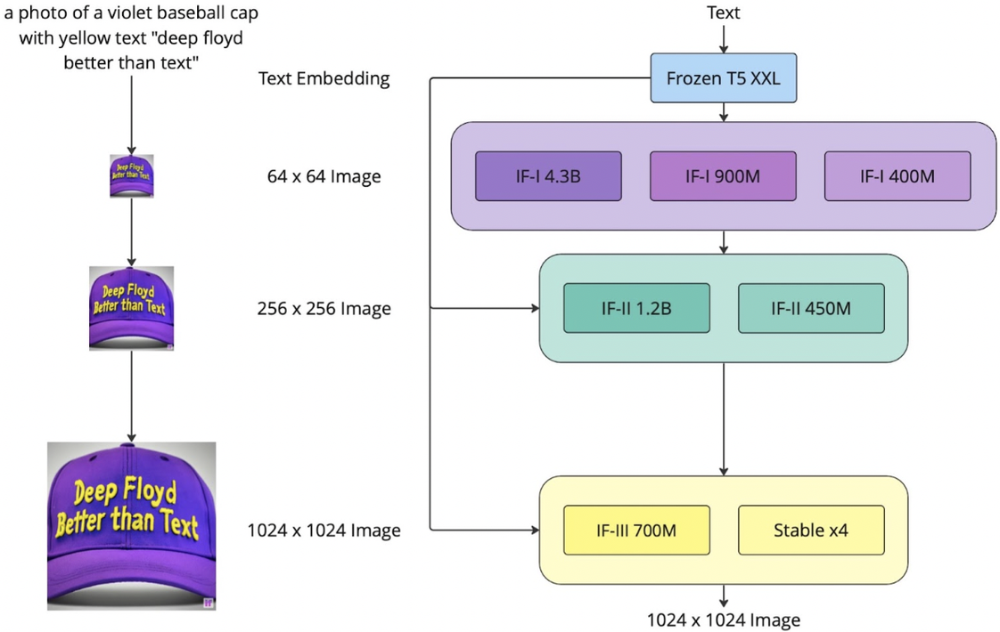
Figure 1. Network architecture of DeepFloyd (credit to Stability AI).
Let's try different text prompts (each embedding has shape \([1, 77, 4096]\), i.e., \([\text{batch}, \text{max_seq_len}, \text{embed_dim}]\)), embeddings of which are generated by T5 encoder. The generated with different inference steps are shown in Figure 2 and Figure 3, respectively.
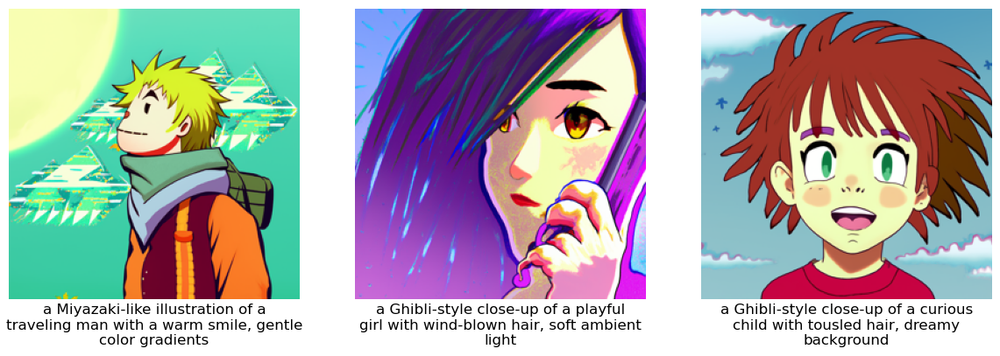
Figure 2. Generated images with 20 inference steps.
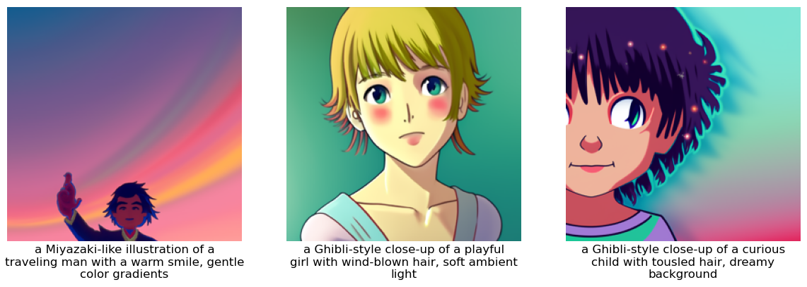
Figure 3. Generated images with 10 inference steps.
Summaries
The random seed is chosen as \(666\);
According to Figure 2 and Figure 3, we can find different inference steps lead to images of different qualities. We notice that more steps can lead to sharper details, more stable structure, better alignment with the prompt, and reduced noise and artifacts.
The prompts are:
a Miyazaki-like illustration of a traveling man with a warm smile, gentle color gradients;
a Ghibli-style close-up of a playful girl with wind-blown hair, soft ambient light;
a Ghibli-style close-up of a curious child with tousled hair, dreamy background.
Part A.1: Sampling Loops
Starting with a clean image, \(x_0\), we can iteratively add noise to an image, obtaining progressively more and more noisy version of the image, \(x_t\), until we are left with basically pure noise at timestep \(t=T\). For the DeepFloyd models, \(T=1000\). A diffusion model tries to reverse this process by denoising the image. Briefly, a diffusion model tries to predict the noise in the image given a noisy \(x_t\) and the timestep \(t\). The whole process is shown in Figure 4.
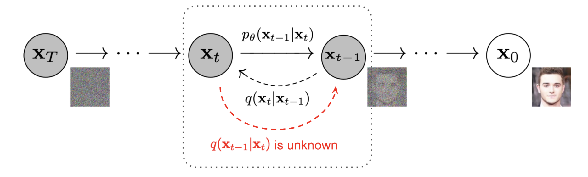
Figure 4. Denoising Diffusion Probabilistic Models (credit to source paper).
1.1 Implementing the Forward Process
A key part of difussion is the forward process, which takes a clean image and adds noise to it. The forward process is defined by:
Figure 5. The forward process of the campanile with different noise levels.
1.2 Classical Denoising
As a comparison with the diffusion, we first try to denoise these noisy images using classical methods, e.g., Gaussian blur filtering. We use torchvision.transforms.functional.gaussian_blur to denoise images. The Gaussian-denoised version is shown in Figure 6.
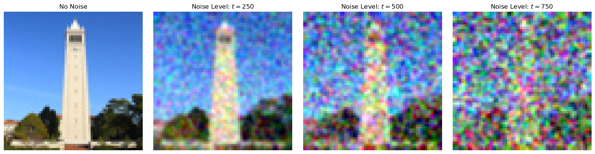
Figure 6. Denoising noisy images using Gaussian blur.
1.3 Implementing One Step Denoising
From Figure 6, we know the classical denoising methods cannot work well. Thus, we will use a pretrained diffusion model to denoise. The denoiser that we use is stage_1.unet, which is a UNet that has already been trained on a very, very large dataset of \(\left(x_0, x_t\right)\) pairs of images. We can use it to recover Gaussian noise from the image. Then, we can remove this noise to recover (something close to) the original image. The one-step denoising effect can be found in Figure 7. We can notice that the pretrained diffusion model performs much better than the Gaussian blur filters. When the noise level is low, the diffusion model can nearly completely recover the image. When the noise level is high, the diffusion model can still recover the general feature of the image, but in which the higher frequency information is mostly lost.
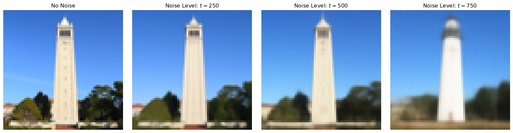
Figure 7. One-step denoising noisy images using the pretrained diffusion model.
1.4 Implementing Iterative Denoising
Iterative denoising means that we do not denoise the image using only one step. Instead, we iteratively recover the noisy image to the less noisy one, and finally we recover the original image. To actually do this, we have the following formula:
\(x_0\) is our current estimate of the clean image.
We implement the iterative denoising, as shown in Figure 8. Compared with the one-step denoising, we can find that there are more sharper characters. Again, the Gaussian blur cannot recover the image.
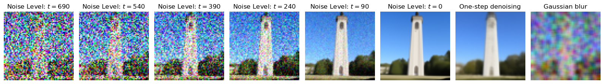
Figure 8. Iteratively denoising noisy images using the pretrained diffusion model.
1.5 Diffusion Model Sampling
In this part, we want the diffusion model to denoise an image that is purely random noise. Since the DeepFloyd model is prompt-based, the prompt we use here is "a high quality photo". The generated images are shown in Figure 9. We can still tell the objects from the images, though the quality is not good.
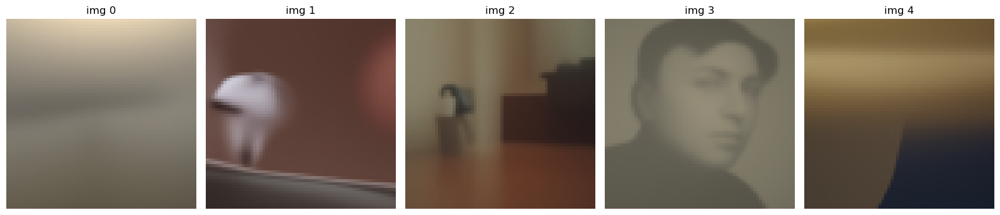
Figure 9. Iteratively denoising a random noise.
1.6 Classifier-Free Guidance
We can notice that the generated images in the prior section are not very good. In order to greatly improve image quality (at the expense of image diversity), we can use a technique called Classifier-Free Guidance (CFG). In CFG, we compute both a conditional and an unconditonal noise estimate. We denote these \(\epsilon_{c}\) and \(\epsilon_{u}\). Then, we let our new noise estimate be:
where \(\gamma\) controls the strength of CFG. If \(\gamma = 0\), we get an unconditional noise estimate; if \(\gamma = 1\), we get the conditional noise estimate; if \(\gamma > 1\), we will get much higher quality images (if you are curious about the possible reason, please check out here).
Using the CFG, the denoised images are shown in Figure 10, which are much better.
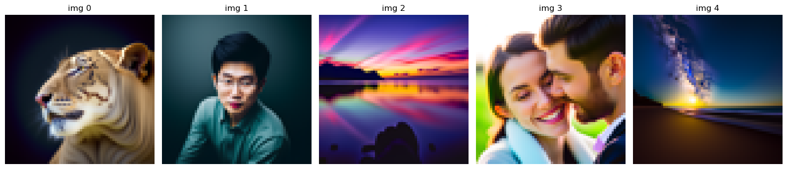
Figure 10. CFG-iteratively denoising a random noise.
1.7 Image-to-image Translation
Here, we are going to take some original images, noise them a little, and force them back onto the image manifold without any conditioning. This follows the SDEdit algorithm. Again, we use "a high quality photo" as the conditonal text prompt.
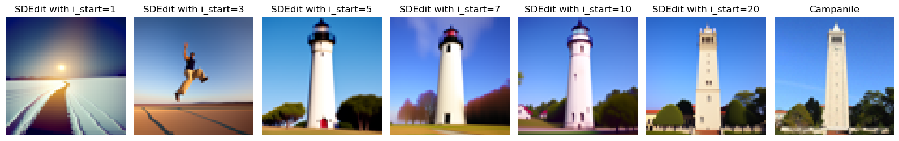
Figure 11. SDEdit of campanile.
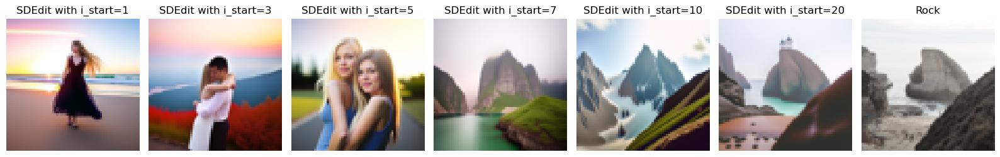
Figure 12. SDEdit of a reef.
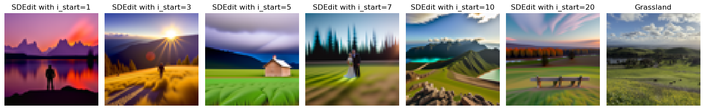
Figure 13. SDEdit of a grassland.
1.7.1 Editing Hand-Drawn and Web Images
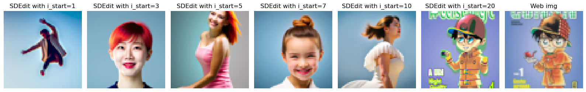
Figure 14. SDEdit of Detective Conan (from web).
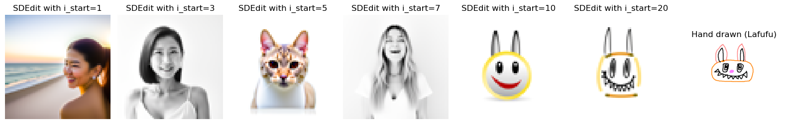
Figure 15. SDEdit of a hand-drawn image (Lafufu).
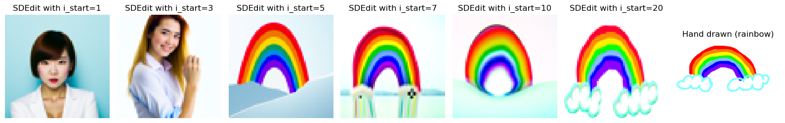
Figure 16. SDEdit of a hand-drawn image (rainbow, credit to Iris).
1.7.2 Inpainting
We can use the same procedure to implement inpainting (following the RePaint paper). That is, given an image \(x_{\text{orig}}\) and a binary mask \(\mathbf{m}\), we can create a new image that has the same content where \(\mathbf{m}\) is 0, but new content wherever \(\mathbf{m}\) is 1. To do this, we can run the diffusion denoising loop. But at every step, after obtaining \(x_{t}\), we "force" \(x_t\) to have the same pixels as \(x_{\text{orig}}\) where \(\mathbf{m}\) is 0, i.e.,
Essentially, we leave everything inside the edit mask alone, but we replace everything outside the edit mask with our original image -- with the correct amount of noise added for timestep \(t\). We try three different images, as shown below.
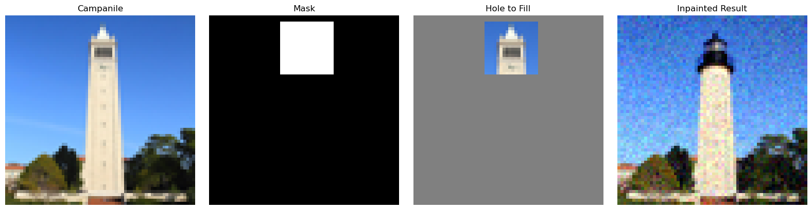
Figure 17. Inpaint of Campanile.
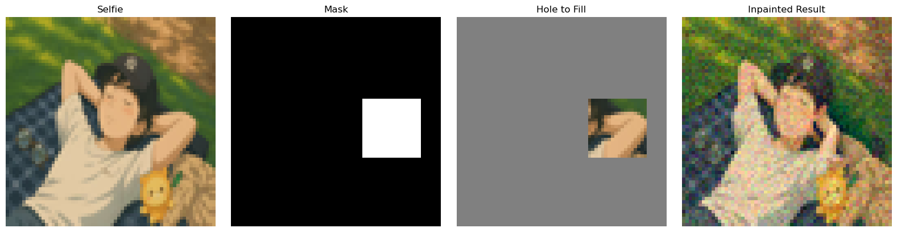
Figure 18. Inpaint of Ghibli-style selfie 1.
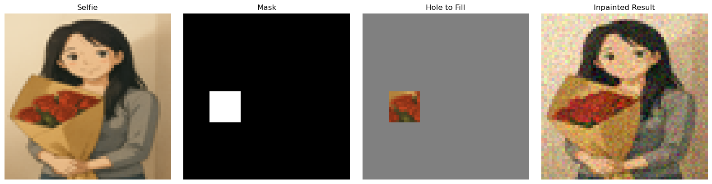
Figure 19. Inpaint of Ghibli-style selfie 2.
1.7.3 Text-Conditional Image-to-image Translation
Now, we will do the same thing as SDEdit, but guide the projection with a text prompt. We try three different images, as shown below.
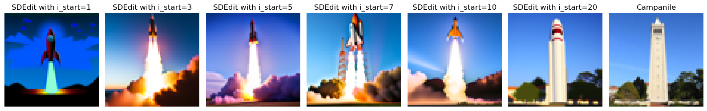
Figure 20. Text-conditional image-to-image translation of Campanile. The prompt text is "a rocket ship launching into the night sky"
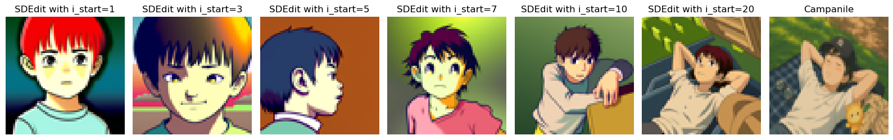
Figure 21. Text-conditional image-to-image translation of selfie 1. The prompt text is "a Ghibli-style close-up of a brave boy looking into the distance, pastel tones, hand-drawn feel"
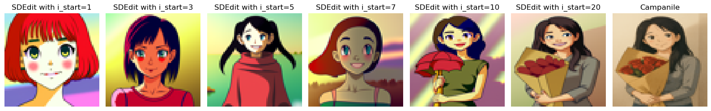
Figure 22. Text-conditional image-to-image translation of selfie 2. The prompt text is "a Ghibli-style close-up of a woman smiling subtly, dreamlike background"
1.8 Visual Anagrams
We will implement Visual Anagrams and create optical illusions with diffusion models. In this part, we will create an image that looks differently when flipped upside down.
To do this, we will denoise an image \(x_t\) at step \(t\) normally with the prompt \(p_1\), to obtain noise estimate \(\epsilon_1\). But at the same time, we will flip \(x_t\) upside down, and denoise with the prompt \(p_2\), to get noise estimate \(\epsilon_2\). We can flip \(\epsilon_2\) back, and average the two noise estimates. We can then perform a reverse/denoising diffusion step with the averaged noise estimate. The full algorithm will be:
\(
\epsilon_1 = \text{CFG of UNet}\left(x_t, t, p_1\right)
\)
\(
\epsilon_2 = \text{flip}\left(\text{CFG of UNet}\left(\text{flip}\left(x_t\right), t, p_2\right)\right)
\)
where UNet is the diffusion model UNet from before, \(\text{flip}\left(\cdot\right)\) is a function that flips the image, and \(p_1\) and \(p_2\) are two different text prompt embeddings. And our final noise estimate is \(\epsilon\). Please implement the above algorithm and show example of an illusion.
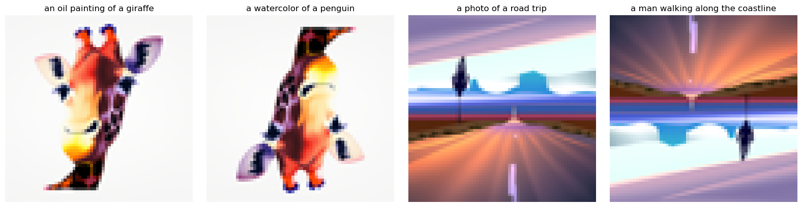
Figure 23. Visual anagrams: two views shown in the same image when flipped upside down.
1.9 Hybrid Images
We will implement Factorized Diffusion and create hybrid images. In order to create hybrid images with a diffusion model we can use a similar technique as above. We will create a composite noise estimate \(\epsilon\), by estimating the noise with two different text prompts, and then combining low frequencies from one noise estimate with high frequencies of the other. The algorithm is:
\(
\epsilon_1 = \text{CFG of UNet}\left(x_t, t, p_1\right)
\)
\(
\epsilon_1 = \text{CFG of UNet}\left(x_t, t, p_2\right)
\)
Figure 26. Color inversions: two views when the color is inversed.
Design a course logo!
We use two prompt texts, "an oil painting of UC Berkeley logo" and "an oil painting of the course logo of computer vision" to iteratively denoise a "Cal" logo. The course logo will show letters of "Cal" and "CV" at the same time.
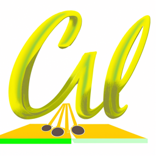
Figure 27. Design the course logo by iteratively CFG denoising the image with two prompt text, "an oil painting of UC Berkeley logo" and "an oil painting of the course logo of computer vision".
Part B.1: Training a Single-Step Denoising UNet
In this part, we will focus on training our own
Flow Matching model on
MNIST dataset. We choose the
UNet model as the backbone and build it from scratch.
1.0 Recap of Flow Matching for Generative Modeling
Flow matching is a method for training continuous-time generative models by directly learning a
probability flow that transports a simple base distribution to a complex data distribution.
Instead of using stochastic diffusion processes, flow matching learns a deterministic ordinary
differential equation (ODE) whose solution maps base samples to data samples.
Let \( p_0(x) \) be a simple base distribution (e.g. standard Gaussian) and \( p_1(x) \) be the
data distribution. Flow matching introduces a time-dependent family of intermediate
distributions \( p_t(x) \), for \( t \in [0, 1] \), that smoothly connects them:
The evolution of samples over time is described by an ODE:
\( \frac{d x_t}{d t} = v_\theta(t, x_t), \)
where \( v_\theta(t, x) \) is a neural network (the velocity field) with parameters
\( \theta \). This ODE induces a probability flow that pushes forward \( p_0 \) into \( p_1 \).
The time evolution of the distributions \( p_t(x) \) under the flow is governed by the
continuity equation:
Flow matching assumes we can construct a probability path \( p_t(x) \) between
\( p_0 \) and \( p_1 \), for which there exists an oracle or analytically defined
vector field \( u_t(x) \) such that:
There are a lot of ways to construct the vector field. What we use here is a simple but useful one,
coupling base and data samples via a simple interpolation, a.k.a.
rectified flow.
Sample \( x_0 \sim p_0 \), \( x_1 \sim p_1 \), and define an interpolated state:
\( x_t = (1 - t)\, x_0 + t \, x_1. \)
The corresponding oracle velocity along this path is:
\( u_t(x_t) = \frac{d x_t}{d t} = x_1 - x_0. \)
In practice, we can sample triples \( (x_0, x_1, t) \), compute \( x_t \), and treat
\( (x_t, t) \) as inputs and \( u_t(x_t) = x_1 - x_0 \) as the regression target for
the model \( v_\theta \).
The flow matching objective is typically a mean-squared error between the learned
velocity field and the oracle velocity:
Taking \( x_{t=1} \) as a generated sample from an approximation of \( p_1(x) \).
Flow matching can be seen as a deterministic counterpart to diffusion-based generative
modeling. Diffusion models learn a score function for a noisy stochastic process and often
require reverse-time SDE or ODE solvers. In contrast, flow matching directly learns a
deterministic velocity field that transports probability mass, avoiding stochastic
perturbations during training and sampling.
1.1 Implementing the UNet
We implement the denoiser as a UNet, which consists of
a few downsampling and upsampling blocks with skip connections. Specifically, the architecture
is shown in Figure 28.
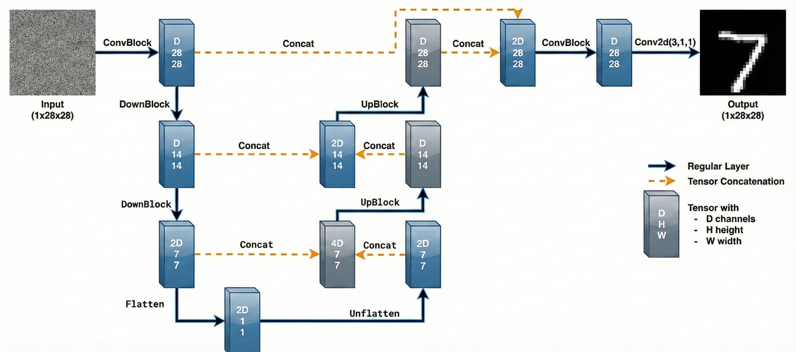
Figure 28. The architecture of uncondtional Unet.
The diagram above uses a number of standard tensor operations defined as follows:
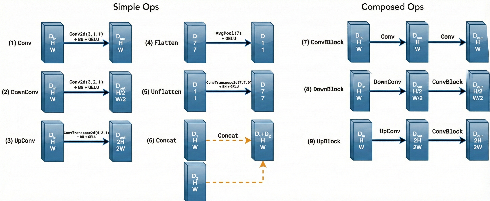
Figure 29. The details of tensor operations.
1.2 Using the UNet to Train a Denoiser
For now, we focus on the simpler problem, i.e., one-step denoising. To train our denoiser, we need
to generate training data pairs of \((z,x)\), where each \(x\) is a clean MNIST digit.
For each training batch, we can generate \(z\) from \(x\) using the following noising process:
\( z = x + \sigma \epsilon, \quad \text{where} \ \epsilon \sim \mathcal{N}\left(\mathbf{0},\mathbf{I}\right). \)
where \(\sigma\) controls the noise level. As shown in Figure 30, the images are contaminated with
noise at different intensities, each determined by a specific \(\sigma\) value.
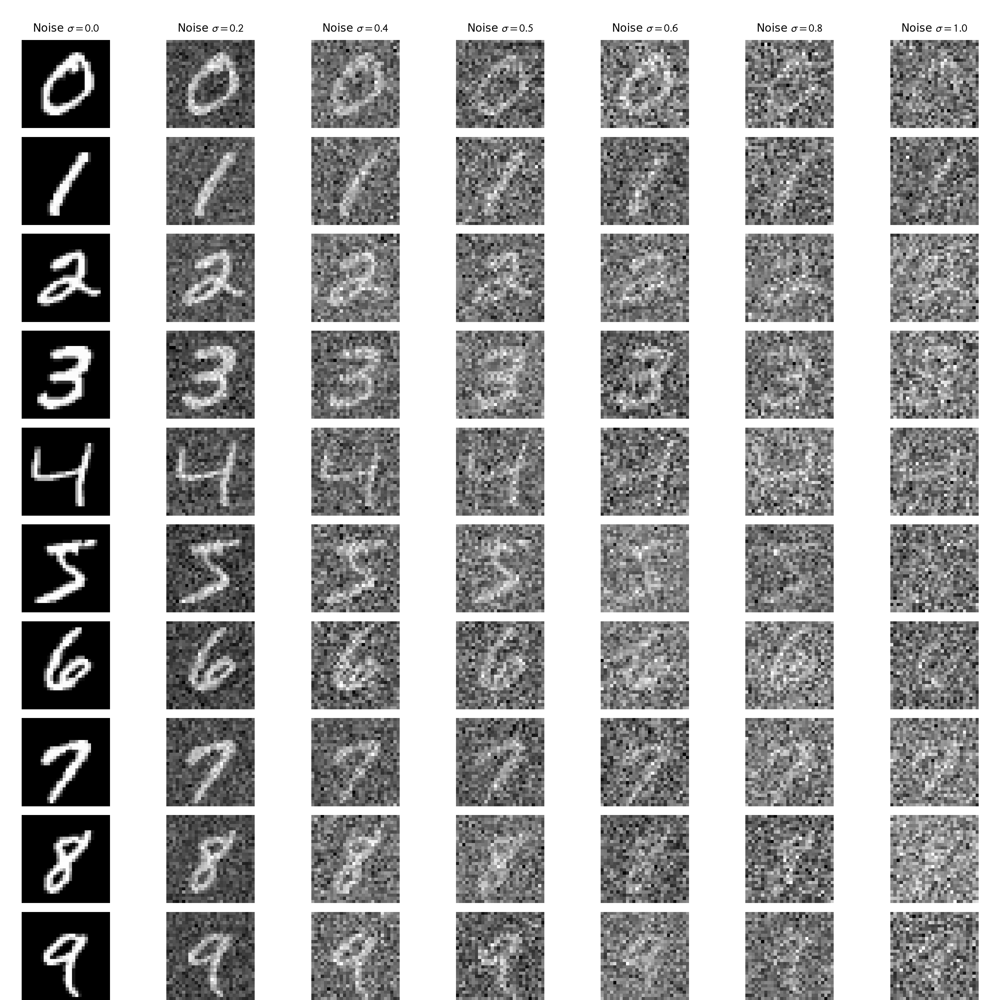
Figure 30 (a). The noising process with \(\sigma = \left[0.0, 0.2, 0.4, 0.5, 0.6, 0.8, 1.0\right]\).
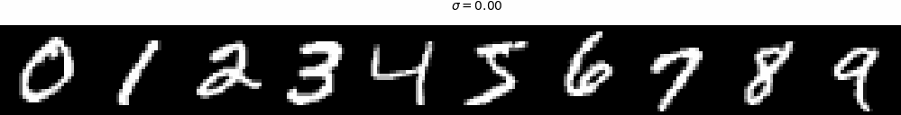
Figure 30 (b). The animation of the noising process with gradually changing \(\sigma\).
1.2.1 Training
Now we train this denoiser to denoise noisy image \(z\) with \(\sigma=0.5\) applied to a clean image \(x\),
which means other \(\sigma\) values are out-of-distribution testing cases. The configuration of this
one-step denoising model is shown in Table 1. The procedure of the training loss is shown in Figure 31. You can expand the following unconditional UNet architecture block to see the details.
Table 1. Training Hyperparameters of the one-step unconditional UNet.
Parameter
Value
Noise level σ
0.5
Training size
60000
Batch size
256
Number of Epochs
5
Hidden dimension D
128
Learning rate
1e-4
Optimizer
Adam
Loss function
MSE Loss
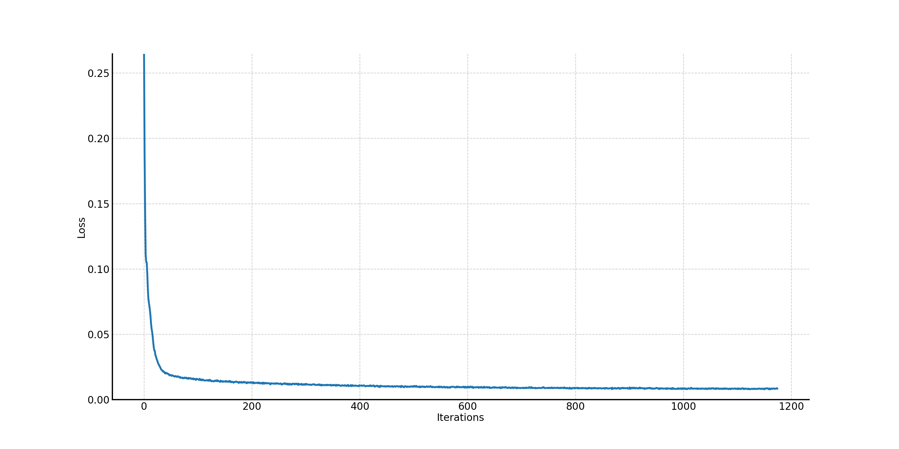
Figure 31. The training loss curve of the one-step unconditional UNet.
With the noise level \(\sigma = 0.5\), we sample results on the test set to see if the one-step denoising
UNet can work. In Figure 32, we can find that noise level 0.5 is kind of large because, for example,
it is hard for people to tell the noisy input with the digit "5". The convergence is very fast so that
even with one epoch training, the denoising effect is satisfactory. After 5 epoch training, the results
look very good.
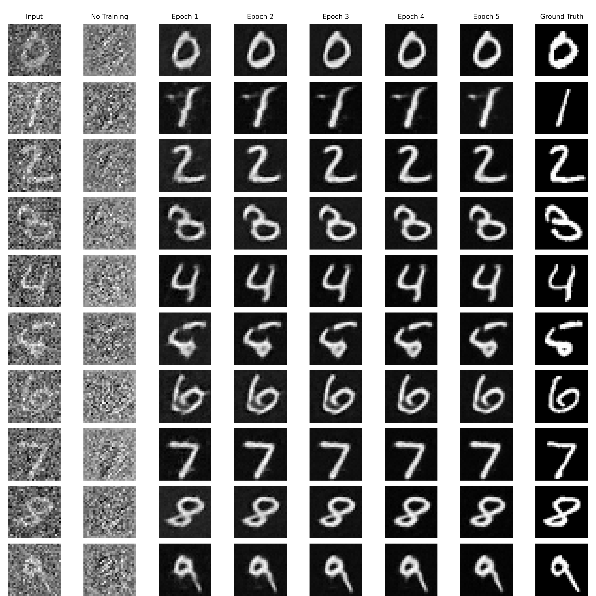
Figure 32. The results of the one-step denoising UNet on the test set with noise level \(\sigma = 0.5\): noisy input, no training, epoch from 1 to 5, and ground truth.
1.2.2 Out-of-Distribution Testing
Our one-step denoiser was trained with \(\sigma = 0.5\). Now let's examine its out-of-distribution capacity.
We vary the levels of noise to see if the one-step denoiser still works. In Figure 33, we can notice when
the noise is not large (\(\sigma \le 0.5\)), the one-step denoiser can somehow generalize well even though we
only train it on the noise level 0.5; however, when \(\sigma > 0.5\), the denoising capacity decreases a lot.
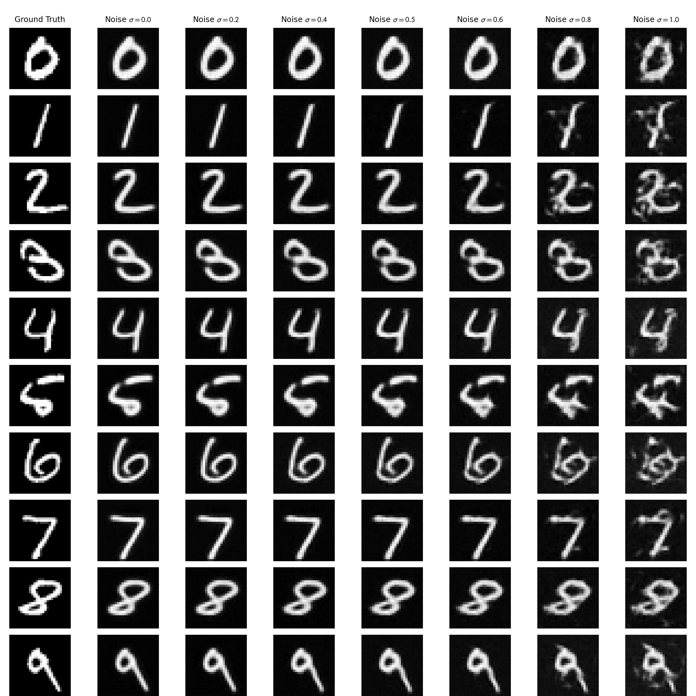
Figure 33. Out-of-distribution examination of the one-step denoising UNet.
1.2.3 Denoising Pure Noise
To make denoising a generative task, now we can denoise pure, random Gaussian noise. We can think of this as
starting with a blank canvas \(z = \epsilon\), where \(\epsilon \sim \mathcal{N}\left(\mathbf{0}, \mathbf{I}\right)\),
and denoising it to get a clean image \(x\). The training loss curve for this case is shown in Figure 34.
Compared with Figure 31, the training loss curve with \(\sigma = 0.5\), we know that the training loss does not
converge well. We sample some results on pure noise after 1 to 5 epochs, as shown in Figure 35. Figure 35 means
that denoising pure, random Gaussian noise with one-step unconditonal UNet does not work. This is foreseeable
because we choose MSE loss as the criterion, which means the model will learn the average image of the training set.
To validate this idea, in Figure 36, we show the average image of all images in the training set, which is consistent
with Figure 35 (epoch 5).
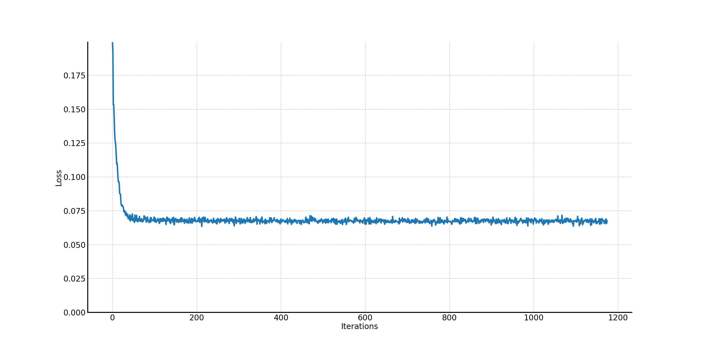
Figure 34. The training loss curve of the one-step unconditional UNet when denoising pure random, Gaussian noise.
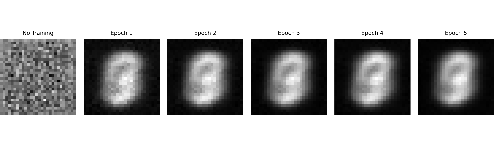
Figure 35. Denoising pure random, Gaussian noise after different training epochs.
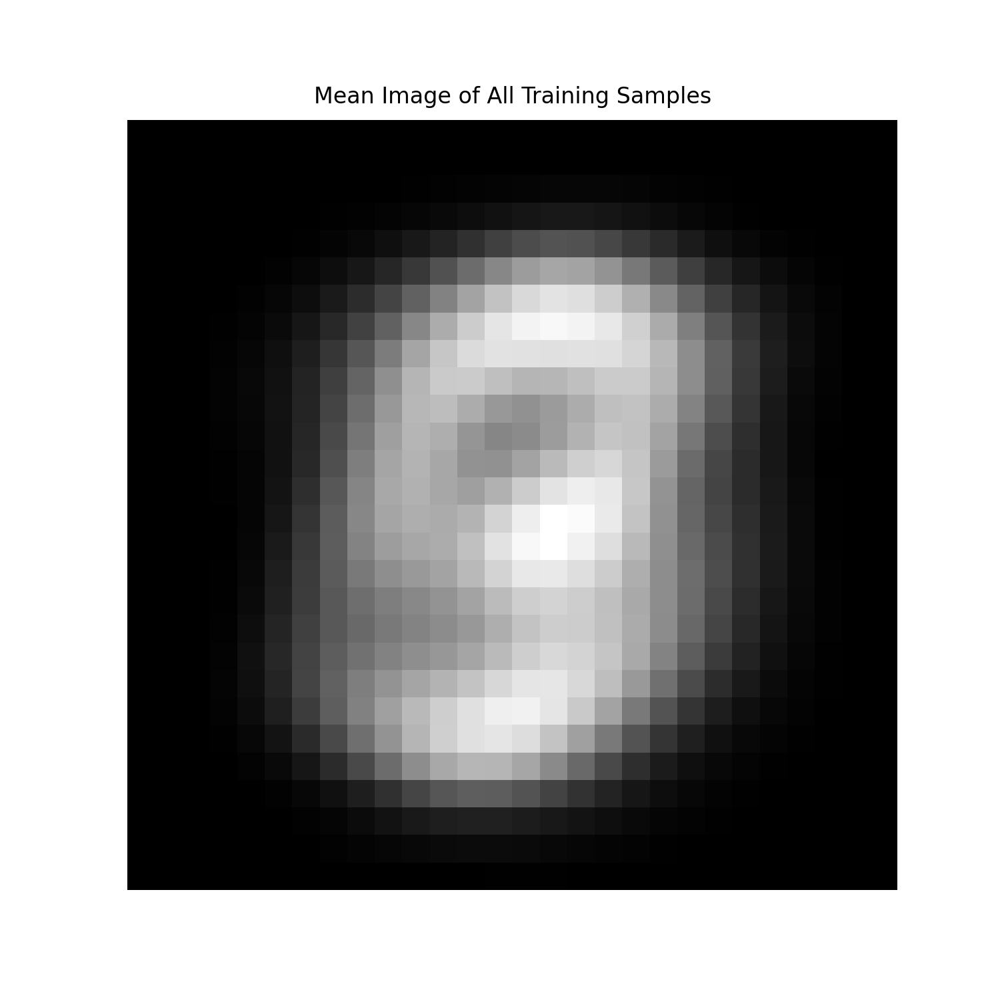
Figure 36. The average image of the training set.
Part B.2: Training a Flow Matching Model
We just saw that one-step denoising does not work well for generative tasks. In this part, we will iteratively
denoise the image with flow matching, specifically, the rectified flow.
2.1 Adding Time Conditioning to UNet
We need a way to inject scalar \(t\) into our UNet model to condition it. There are many ways to do this. In this
part, we use a fully-connected block (FCBlock) to project \(t\) on to \(2D\) dimensions, then concat it with the
"Unflatten" and "UpBlock" module, as shown in Figure 37. FCBlock is actually a bunch of linear layers with activation
functions, as shown in Figure 38. You can expand the time conditioned UNet architecture block to see the details.
fc1_t = FCBlock(...)
fc2_t = FCBlock(...)
# the t passed in here should be normalized to be in the range [0, 1]
t1 = fc1_t(t)
t2 = fc2_t(t)
# Follow diagram to get unflatten.
# Replace the original unflatten with modulated unflatten.
unflatten = unflatten * t1
# Follow diagram to get up1.
...
# Replace the original up1 with modulated up1.
up1 = up1 * t2
# Follow diagram to get the output.
...
2.2 Training the UNet
The algorithm to train the time-conditioned UNet can be found below.
Take gradient descent step on \( \nabla_{\theta} \left\| \left(x_1 - x_0\right) - u_{\theta} \left(x_t, t\right) \right\|^2 \)
7:
until happy
The model configuration for the time-conditioned UNet is shown in Table 2.
Table 2. Training Hyperparameters of the time-conditioned UNet.
Parameter
Value
Training size
60000
Batch size
64
Number of Epochs
10
Hidden dimension D
64
Initial learning rate
1e-2
Optimizer
Adam
Scheduler
Exponential learning rate decay with \(\gamma = 0.1^{1.0 / \text{num_epochs}}\)
Loss function
MSE Loss
The corresponding training loss curve is shown in Figure 39.
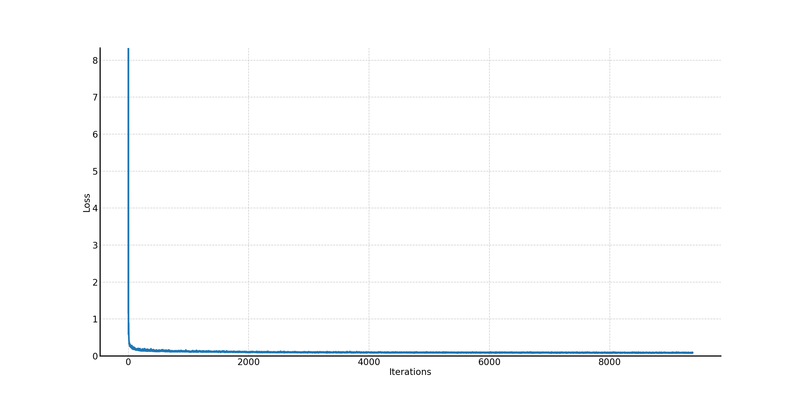
Figure 39. The training loss curve of the time-conditioned UNet.
2.3 Sampling from the UNet
We can now use the trained time-conditioned UNet for iterative denoising using the algorithm below.
Algorithm 2 Sampling
1:
input: \(T\) timesteps
2:
\(x_t = x_0 \sim \mathcal{N}(0, \mathbf{I})\)
3:
for \(t\) from 0 to 1, step size \( \frac{1}{T} \) do
4:
\( x_t = x_t + \frac{1}{T} u_{\theta}(x_t, t) \)
5:
end for
6:
return \(x_t\)
We show our sampling results from the time-conditioned UNet from 1 to 10 epochs in Figure 40. We can find with more
training epochs, the results are gradually getting better. At the very beginning stage, say epoch 1, the generated
image is vague and is hard to distinguish. With enough training, the image first becomes clearer; then we can gradually
tell the digit in each image, though some of which are not like a normal digit. These results are expected because it is
only time-conditioned but not class-conditioned, which means the denoiser tries to imitate randomly from the training set
and does not know the specific digit to generate.
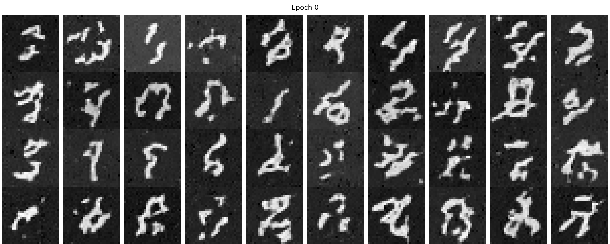
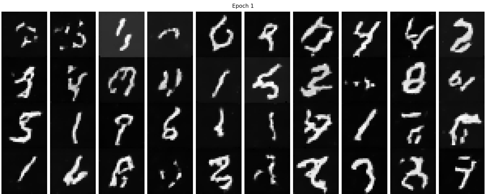
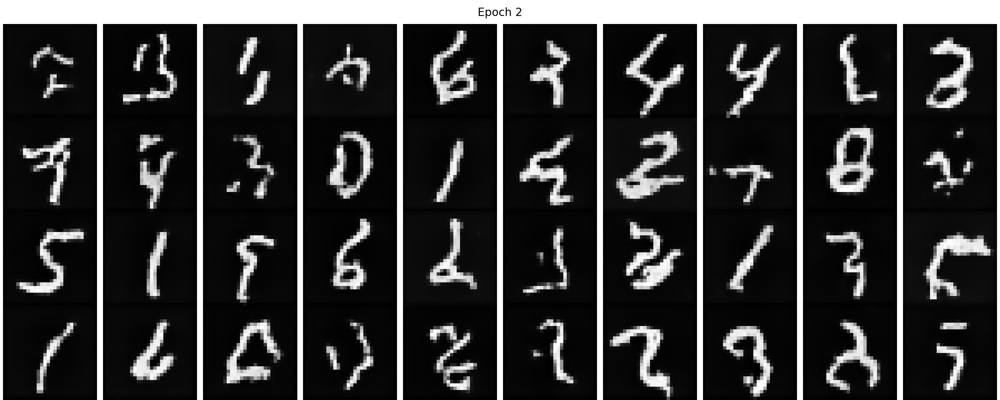
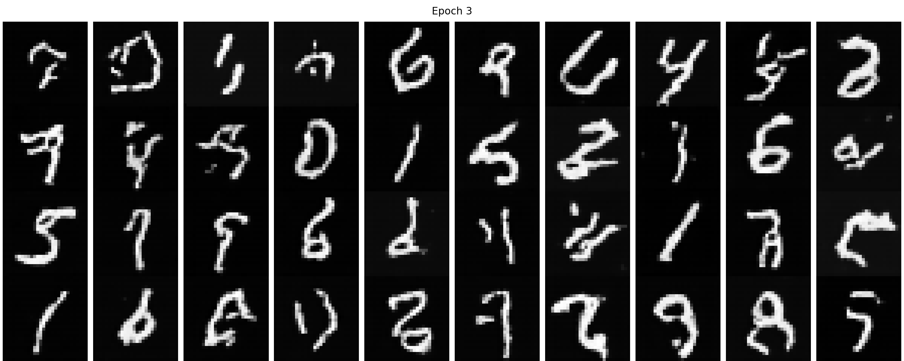
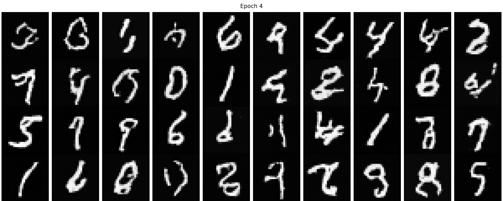
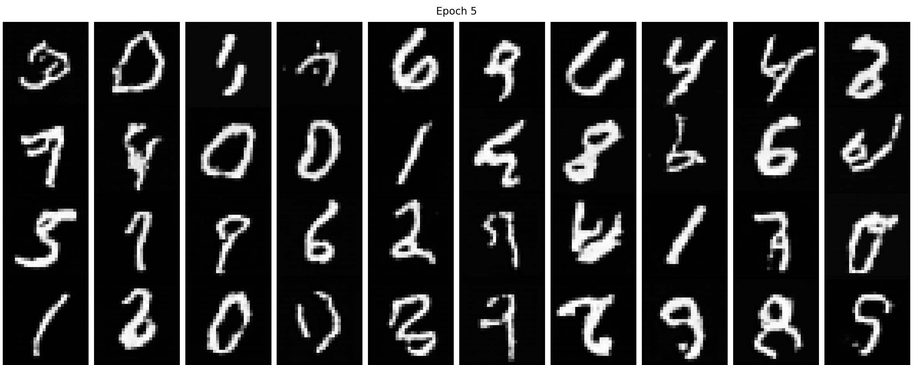
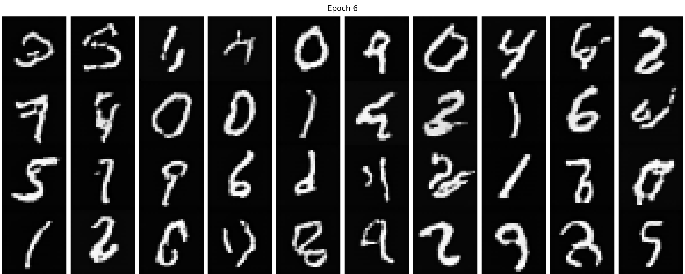
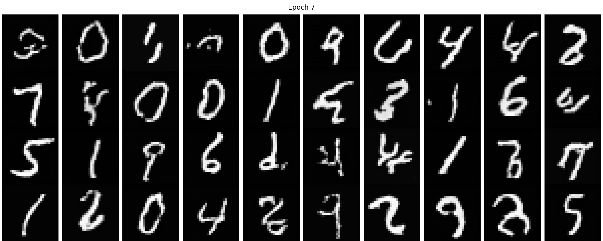
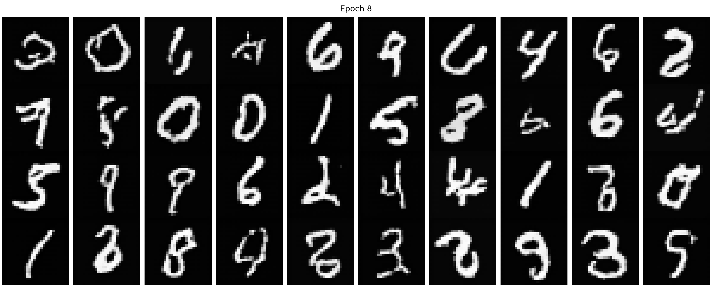
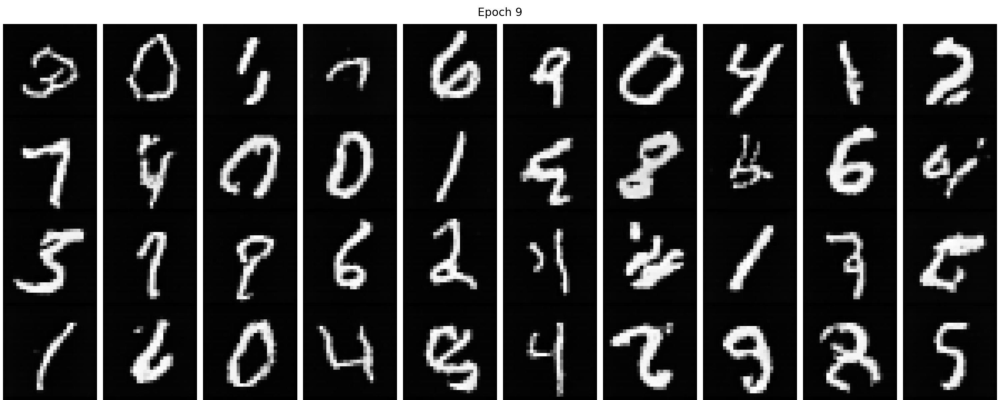
Figure 40. The sampling results from the time-conditioned UNet from 1 to 10 epochs.
2.4 Adding Class-Conditioning to UNet
Now let's make it a class-conditioned UNet, which should be able to generate distinguishable digits
according to the prompt. In this part, we make the class-conditioning vector \(c\) a one-hot vector
instead of a single scalar because we still want our UNet to work without it being conditioned on the
class (recall how classifier-free guidance works). To make the classifier-free guidance work, we
implement dropout for 10% of the time, which means we set the one-hot vector \(c\) to be the zero
vector. The details of how to embed \(t\) and \(c\) can be found below. You can also expand the class-conditioned UNet architecture block to see the details.
fc1_t = FCBlock(...)
fc2_t = FCBlock(...)
fc1_c = FCBlock(...)
fc2_c = FCBlock(...)
# the t passed in here should be normalized to be in the range [0, 1]
t1 = fc1_t(t)
t2 = fc2_t(t)
c1 = fc1_c(c)
c2 = fc2_c(c)
# Follow diagram to get unflatten.
# Replace the original unflatten with modulated unflatten.
unflatten = c1 * unflatten + t1 # (unflatten = t1 * unflatten + c1 can also work)
# Follow diagram to get up1.
...
# Replace the original up1 with modulated up1.
up1 = c2 * up1 + t2 # (up1 = t2 * up1 + c2 can also work)
# Follow diagram to get the output.
...
2.5 Training the UNet
The algorithm to train the class-conditioned UNet can be found below.
Algorithm 3 Class-Conditional Training
1:
repeat
2:
\(x_1, c \sim\) clean image and label from training set
3:
Make \(c\) into a one-hot vector
4:
with probability \(p_{\text{uncond}}\) set \(c\) to zero vector
Figure 42 shows the sampling results from the class-conditioned UNet from 1 to 10 epochs. We can find
that the denoising capacity becomes better with more training epochs. Compared with the time-conditioned UNet,
the digit is more distinguishable and we can guide the generation, which is preferable.
Figure 42 (a). The sampling results from the class-conditioned UNet from 1 to 10 epochs.
Figure 42 (b). The animation of the sampling results from the class-conditioned UNet from 1 to 10 epochs.
Now let's try to remove the learning rate scheduler to see how it affects the training and sampling results. We employ the same training settings as before except removing the learning rate scheduler. The training loss curve is shown in Figure 43, where you can see the training loss is surprisingly, nearly the same as before. It means that the flow matching model is very robust to the learning rate choice (at least in this simple experiment). The sampling results are similar to before as well, as shown in
Figure 43. The training loss curve of the class-conditioned UNet without learning rate scheduler.
Figure 44 (a). The sampling results from the class-conditioned UNet without learning rate scheduler from 1 to 10 epochs.
Figure 44 (b). The animation of the sampling results from the class-conditioned UNet without learning rate scheduler from 1 to 10 epochs.
Part B.3: A Better Time-conditioned only UNet
In our previous time-conditioned only UNet experiment, we found that the generated images are not perfect, though most of them can be recognized as digits. Typically, the time-condtioned only UNet cannot surpass the class-conditioned UNet. However, we can definitely make it better than before by tuning the model architecture and training hyperparameters. In this part, we will show you one possible way to improve the time-conditioned only UNet. The model configuration for the improved time-conditioned UNet is shown in Table 4.
Table 4. Training Hyperparameters of the improved time-conditioned UNet.
Parameter
Value
Training size
60000
Batch size
64
Number of Epochs
20
Hidden dimension D
128
Initial learning rate
5e-3
Optimizer
Adam
Scheduler
Exponential learning rate decay with \(\gamma = 0.1^{1.0 / \text{num_epochs}}\)
Loss function
MSE Loss
The corresponding training loss curve is shown in Figure 44, where the training loss (0.078) is lower than before (0.091), indicating a better model fit.
Figure 44. The training loss curve of the improved time-conditioned UNet.
Figure 45 shows the sampling results from the improved time-conditioned UNet from 1 to 20 epochs. We can find that the denoising capacity becomes better with more training epochs. Compared with the previous time-conditioned UNet, the digit is more distinguishable and some of them are even comparable to the class-conditioned UNet results.
Figure 45. The sampling results from the improved time-conditioned UNet from 1 to 20 epochs.